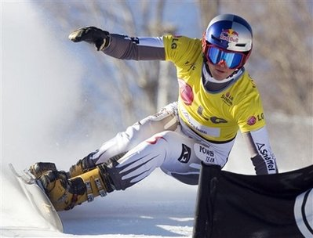
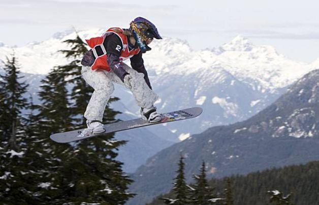
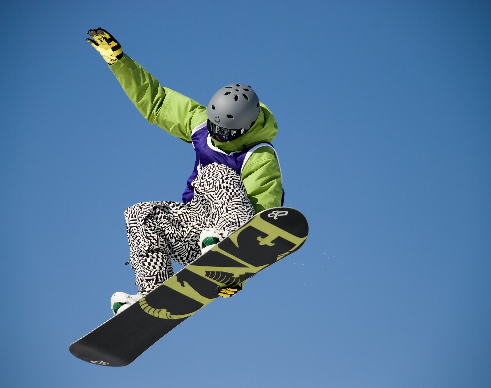
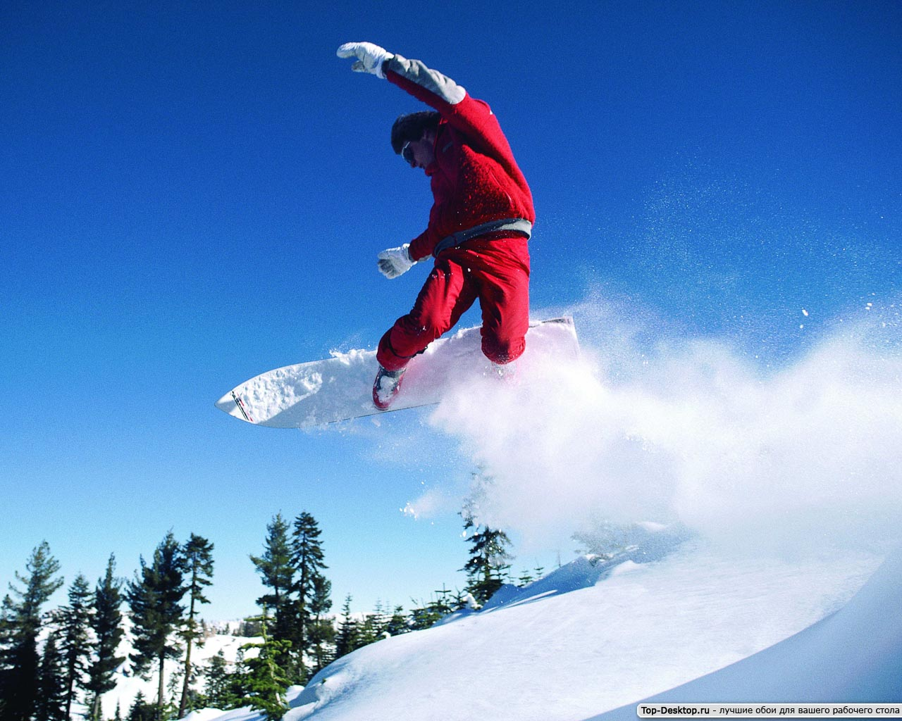
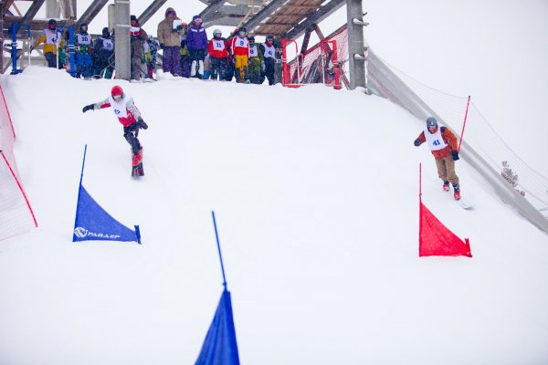

Сноуборд
Что такое сноуборд?
Это не только «снежная доска», о которой вы сразу подумали. Сноуборд – это олимпийский вид спорта, который заключается в спуске с заснеженных склонов и гор на специальном снаряде.
Впервые сноубординг был представлен на зимних Олимпийских играх в Нагано в 1998 году.
Это молодой и активно развивающийся вид спорта. Сноубордисты не привыкли ограничивать себя какими-либо рамками и провозгласили абсолютную свободу катания на доске. Но свобода остается на массовом уровне, любое соревнование проводится по определенным правилам. Так, выделилось множество разновидностей сноубординга, некоторые уже вошли в программу Олимпийских игр, другие – постепенно вливаются или стоят на пороге включения.
Всего разновидностей сноуборда как вида спорта существует невероятное количество. Вот лишь некоторые из них: параллельный гигантский слалом, хаф-пайп, бордкросс, джиббинг и бигэйр. Что же значат эти страшные слова?
На зимних Олимпийских играх соревнования по сноуборду проводятся в следующих видах:
1) параллельный слалом-гигант (мужчины и женщины) представляет скоростной спуск с горы с объездом флажков красного и синего цветов – побеждает тот спортсмен, который пройдет дистанцию быстрее с условием соблюдения всех правил прохождения дистанции;
2) хаф-пайп (мужчины и женщины) – соревнования по акробатическому сноуборду, в ходе которых спортсмены перемещаются внутри большой полутрубы, совершая разнообразные трюки и прыжки;
3) сноуборд-кросс (мужчины и женщины) – четыре спортсмена одновременно осуществляют спуск по трассе с перепадом высот 100-240 метров с уклоном 15—18 градусов с разнообразными рельефными фигурами; включен в олимпийскую программу с 2006 года;
4) слоупстайл в сноуборде (женщины и мужчины) – состоит из выполнения серии акробатических прыжков на пирамидах, трамплинах, контр-уклонах, перилах, расположенных последовательно на всей трассе так, что спортсмен имеет возможность выбора препятствий; будет впервые представлен на Олимпийских играх в Сочи.
5) командный параллельный слалом – отличается от гигантского в первую очередь характером, частотой установки и количеством флагом; впервые включен в программу сочинской Олимпиады.
Интересный факт
Сноуборд движется со средней скоростью около 70 км/ ч.
Надежды России в этой дисциплине связаны с именем Екатерины Илюхиной, завоевавшей серебро в параллельном гигантском слаломе на XXI Олимпийских зимних играх 2010 года в Ванкувере (Канада). Рассчитываем мы и на другую Екатерину – Тудегешеву, ставшей обладательницей Кубка мира сезона 2010/2011.
Наиболее успешно в сноубординге выступают представители США и Швейцарии – из 20-ти разыгранных золотых олимпийских медалей на их счету 12. В России этот вид спорта находится только в зачаточном состоянии – в стадии становления и развития.
Интересным остается факт, связанный с двукратным олимпийским чемпионом в хаф-пайпе – американским сноубордистом Шоном Уайтом по прозвищу Flying Tomato. Уайт имеет тяжелую врожденную форму порока сердца. Этот недуг не помешал американцу добиться высот в спорте.
Сноубординг относится к экстремальным видам спорта, поэтому он тесно связан с риском для здоровья. Причем травматизм при катании на сноуборде в два-три раза выше, чем при занятиях горнолыжным спортом. Будем надеяться, что новые виды, включенные в программу соревнований в Сочи, внесут еще большее разнообразие в турнир сноубордистов, и трибуны будут полностью заполнены зрителями, восторгающимися происходящим действом на российских склонах.
{kind=link}
{kind=link}
{kind=link}
{kind=link}
{kind=link}